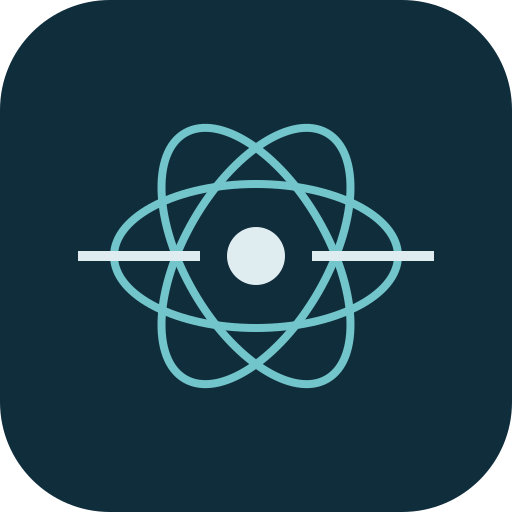

平面由两条传播方向决定
入射方向与选定的散射方向共同确定散射平面。θ 改变偏离入射方向的角度；φ 改变绕入射轴的方位。前向与后向时平面不唯一，图中使用当前方位角的极限基。

AeroScatter 3D气溶胶散射与偏振实验室改变粒子与光的参数，观察三维强度分布，以及选定方向上的电场分量。
网格半径 ∝ √相对强度；每组参数独立归一化，不能用图形大小比较绝对散射强弱。电场箭头只表示方向。
入射方向与选定的散射方向共同确定散射平面。θ 改变偏离入射方向的角度；φ 改变绕入射轴的方位。前向与后向时平面不唯一，图中使用当前方位角的极限基。
网格是各方向散射强度的示意包络。离中心越远，该方向相对强度越大。球体用 I = (|S₁|² + |S₂|²)/2；椭球由两种入射电场诱导的偶极投影求和。所示强度不是带有仪器与距离信息的实际辐亮度。
E⊥ 垂直于散射平面；E∥ 在面内，且与散射光传播方向垂直。条形是同一方向两分量的强度占比。小粒子近似下，90° 侧向散射趋近完全线偏振，不代表所有光只向一个平面传播。
球体（c/a=1）使用 Mie 级数，0.05≤x≤16；旋转椭球使用带辐射反作用修正的准静态电偶极近似，要求 |m|·2π·max(a,c)/λ≤0.3。该阈值是保守使用限制，不代表已验证的误差上界；不包含有限尺寸高阶多极、任意取向或任意形状解。等体积半径 r³=a²c，长短轴比为 max(c/a,a/c)。中央粒子示意保留轴比，但不与强度网格按真实长度同比例绘制。
环境折射率为1；m=n+iκ，n=1.01–2，κ=0–1，时间因子 exp(−iωt)。Qabs=Qext−Qsca；SSA=Qsca/Qext。效率统一以等体积球截面 πr² 归一化，并非椭球投影面积，也不是百分比。超出范围时不显示旧结果。
椭球对称轴固定 Z、入射光沿 X，φ 可改变强度。DoLP 使用完整线偏振相干矩阵，包含非对角项；两条 E 基方向不一定是偏振主轴。球体仍采用 |I⊥−I∥|/(I⊥+I∥)。网格逐参数归一化，不用于比较绝对强弱；不支持粒径分布或多次散射。
数值参照：miepython 文档；椭球准静态极化率与去极化因子采用均匀介质椭球标准解，验证范围与公式见项目 docs/TECHNICAL.md。